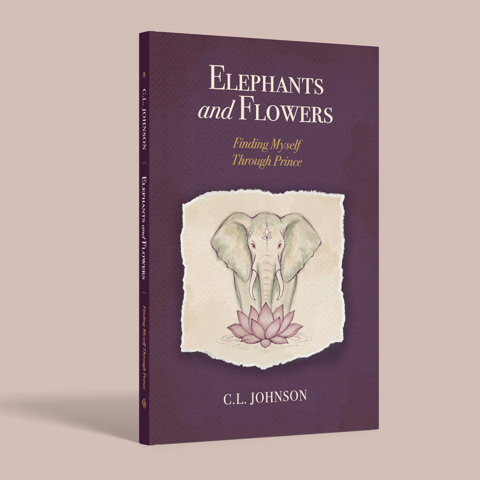
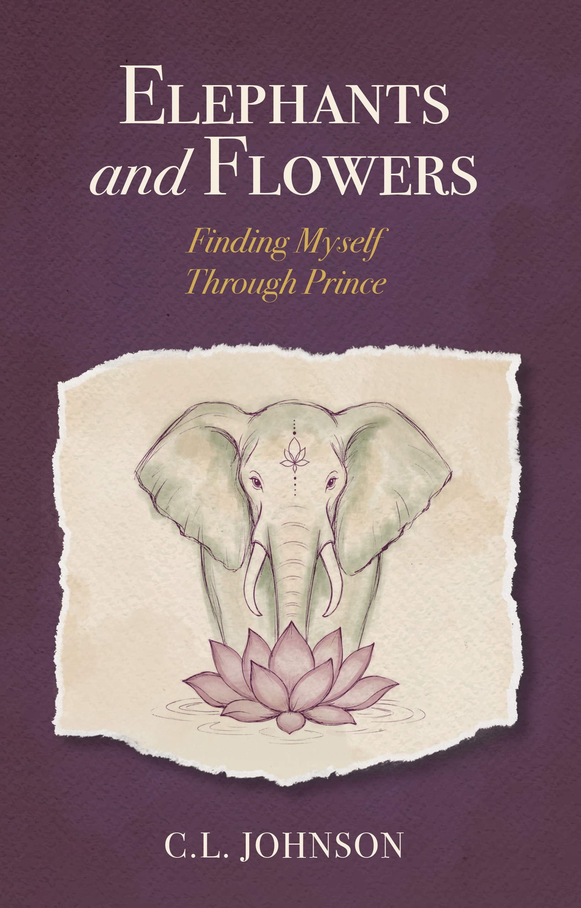

C.L. Johnson
Author of the memoir Elephants and Flowers: Finding Myself Through Prince
A memoir of music, memory, disability, faith, and becoming.
Released Friday, September 11, 2026. Available now.

© 2026 C.L. Johnson
Elephants and Flowers: Finding Myself Through Prince

At three years old, C.L. Johnson heard Prince’s “Little Red Corvette” and turned toward a sound that would follow him for the rest of his life.
Born three months premature with spastic quadriplegic cerebral palsy, Johnson grew up inside a body often lifted, positioned, assisted, and interpreted by others. Prince’s music reached him differently. It did not need a ramp, a transfer, or permission from his muscles. It came through the air and opened a private world where rhythm, faith, longing, grief, desire, and self-definition could begin to speak.
In Elephants and Flowers: Finding Myself Through Prince, Johnson traces a lifelong relationship with Prince’s music, not as celebrity worship, but as spiritual formation. From childhood discovery in small-town Minnesota to grief after his grandmother’s death, from a suicidal crisis interrupted by “Purple Rain” to the complicated dignity of living inside disability and dependence, Prince’s work becomes a companion through the hardest and holiest questions of Johnson’s life.
Intimate, reflective, and spiritually searching, Elephants and Flowers is a memoir about music as survival, disability as embodied complexity, fandom as community, grief as love in motion, and the long practice of learning to answer with a life of one’s own.
Elephants and Flowers: Finding Myself Through Prince was released Friday, September 11, 2026 and is available now through Amazon in hardcover, paperback, and Kindle formats.
About C.L. Johnson

The Memoir Is Here
Elephants and Flowers: Finding Myself Through Prince is now published.
The memoir was released on Friday, September 11, 2026 and is available through Amazon in hardcover, paperback, and Kindle editions.
Choose your edition on Amazon.
Requests for personally inscribed paperback and hardcover copies remain open. The first batch has been delayed until October 8, and invoices will not be sent until after that date. Full details, including the complimentary PDF offer for customers waiting on an inscribed copy, are on the Ordering page.
- Manuscript: Complete
- Cover design: Complete
- Publication: September 11, 2026
- Retail editions: Available now on Amazon
- Personally inscribed copies: Requests open; first batch expected October 8
Get in touch
For reader notes, interview requests, podcast invitations, review inquiries, or questions about Elephants and Flowers, please write to:
Elephants and Flowers is not endorsed, sponsored, or approved by the Prince Estate or Paisley Park Enterprises.